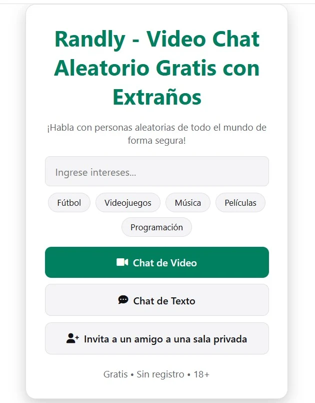

Última actualización: octubre de 2026
Omegle cerró en noviembre de 2023 y millones de personas se quedaron de repente sin su forma favorita de conocer gente por internet. Desde entonces han aparecido decenas de "alternativas a Omegle" y, siendo sinceros, no todas son iguales. Algunas están llenas de anuncios, otras no tienen ninguna moderación y otras te obligan a crear una cuenta antes de poder saludar.
Esta guía explica qué importa de verdad al elegir un sitio de chat aleatorio en 2026, qué conviene evitar y dónde encaja Randly. Tanto si quieres practicar un idioma, hacer un amigo de otro país o simplemente pasar diez minutos entretenido, al final sabrás exactamente qué buscar.
Durante años, Omegle fue el lugar por defecto para conocer gente al azar en internet. Abrías la página, pulsabas un botón y en segundos hablabas con un desconocido, por texto o por vídeo. Era sencillo, y esa sencillez fue lo que lo hizo enorme.
El sitio cerró de forma definitiva en noviembre de 2023. Desde entonces, muchas páginas han copiado su nombre o su aspecto. Es importante entender que ninguna de ellas es el Omegle original. Algunas son sitios de chat aleatorio correctos; otras son copias creadas sobre todo para mostrar anuncios. Por eso conviene mirar con atención antes de dedicarles tu tiempo.
Una buena alternativa debería mantener ese espíritu y corregir lo que Omegle hacía mal: la moderación débil y la poca seguridad.
Muchos sitios dicen ser "gratis", pero bloquean funciones básicas, como elegir país, detrás de un plan de pago. Otros te dejan probar un minuto y luego te piden registrarte. Las pantallas de registro son una de las razones más comunes por las que la gente abandona un chat aleatorio, porque lo importante es empezar a hablar rápido.
Antes de invertir tu tiempo, comprueba tres cosas: ¿puedes chatear como invitado?, ¿son gratis los filtros? y ¿te empuja el sitio hacia un plan de pago?
Busca un botón de reporte, bloqueos temporales automáticos para quienes reinciden y una regla clara de 18+. Un sitio sin moderación es un sitio que debes abandonar. Una buena moderación no hace que un sitio sea perfectamente seguro, pero demuestra que quienes lo dirigen se preocupan por la experiencia.
Comprueba también si el sitio te explica qué pasa con tus conversaciones. Un sitio que no guarda tus chats es mejor para tu privacidad que uno que los conserva.
Hoy la mayoría chatea desde el teléfono. No deberías tener que descargar una app solo para probar un sitio. Una buena versión web funciona directamente en el navegador del móvil, así empiezas en segundos y cierras la pestaña cuando terminas. Las apps están bien si te gustan, pero deben ser opcionales, no obligatorias.
La aleatoriedad pura es divertida durante unos minutos y después cansa. Saltas, saltas, saltas y nunca encuentras una buena conversación. Dos funciones lo solucionan:
Si quieres practicar inglés, español o árabe, o simplemente conoces gente de otros países, la traducción integrada hace las conversaciones mucho más fáciles. Sin traducción, un chat con alguien que habla otro idioma suele acabar después del "hola". Con ella, puedes mantener una conversación de verdad.
No todas las alternativas funcionan igual. Estos son los tipos más comunes que te encontrarás y las ventajas y desventajas de cada uno:
Ninguno es bueno o malo por sí mismo. La opción adecuada depende de lo que quieras. Pero si buscas la experiencia más parecida a la original, un sitio de navegador totalmente gratis y con una moderación razonable es la mejor opción.
Randly es un chat aleatorio de vídeo y texto gratuito, construido en torno a esos cinco puntos:

Creamos Randly porque las pantallas de registro son molestas. Abres la página, confirmas que tienes 18 años o más y ya estás dentro. No hay cuenta, no hay app que descargar y no hay un plan de pago que esconda las funciones útiles. Elegir país y la traducción en vivo, por los que muchos otros sitios cobran, aquí son gratis.
Ese es todo el proceso. Sin correo, sin contraseña y sin esperas.
Imagina que eres de México y quieres hablar con alguien de Turquía. En Randly puedes elegir Turquía como país y, con la traducción en vivo activada, tú lees la conversación en español mientras la otra persona la lee en turco. La traducción cubre 12 idiomas, así que sirve para muchas otras combinaciones. Además, es una forma muy natural de practicar un idioma, porque hablas con personas reales sobre cosas reales.
El chat aleatorio es divertido, pero también es un lugar donde conoces a desconocidos, así que unos cuantos hábitos ayudan mucho:
¿Habrá un regreso oficial de Omegle?
Omegle cerró definitivamente en 2023. Cualquier sitio que use ese nombre hoy no es el servicio original.
¿Son seguras las alternativas a Omegle?
Depende del sitio. Elige uno con reportes, bloqueos y reglas claras, y protege siempre tu información personal.
¿Cuál es la mejor alternativa a Omegle sin registro?
Randly te permite empezar un chat de video o de texto con un clic y sin cuenta.
¿Puedo usar el chat aleatorio en el móvil?
Sí. Randly funciona directamente en el navegador del móvil, sin descargar ninguna app.
¿Es gratis elegir el país?
En Randly, sí. Elegir país y la traducción en vivo son gratis. Muchos otros sitios cobran por ellos, así que revisa antes de depender de un filtro.
¿Puedo practicar un idioma en los sitios de chat aleatorio?
Sí. Elegir un país y usar la traducción en vivo es una buena forma de hablar con nativos y practicar de manera natural.
¿Quién puede usar Randly?
Solo personas de 18 años o más. La primera pantalla te pide confirmar tu edad antes de entrar.
La mejor alternativa a Omegle es la que mantiene la sensación sencilla y espontánea del original y se toma la seguridad en serio. Busca un sitio gratis, sin registro, que funcione en tu móvil, que te deje elegir con quién hablas y que tenga una moderación real.
Prueba Randly y compara. Y si quieres saber más, lee nuestra guía de chat de vídeo aleatorio gratis y sin registro.